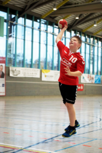
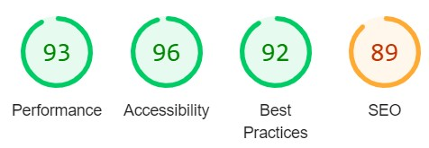
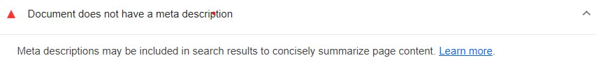
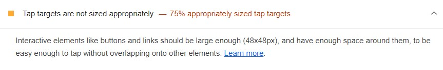
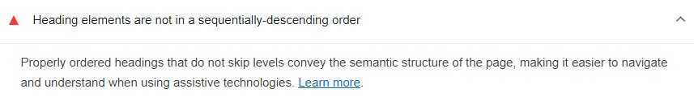
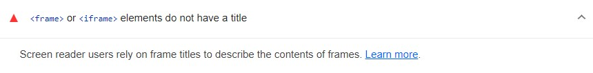

Analyse
Analyse av nettside
Her får du lese om hvordan jeg har analysert og fikset på nettsiden min, for å gi det bedre ytelse og forståelse for søkemotorer og mer universelt utformet. Om du skal gjøre nettsiden din universelt utformet og bra for søkemotorer, så er det viktig å finne hva som kan være feil og eventuelt forbedre nettsiden din. Det fins massevis av forskjellige tekniske verktøy som kan hjelpe med dette på internett. Eksempler på dette kan være Lighthouse og Webaim.
I tillegg så kan du gjøre en rask, heuristisk evaluering, som betyr å evaluere nettsidens brukergrensesnitt ved å lete etter problemer med brukervennlighet og eventuelt forbedre på disse etterpå. Jeg skal evaluere nettsiden basert på 10 heuristiske prinsipper fra Jakob Nielsen som du kan finne her.
Min heuristiske evaluering av nettsiden
Etter nøye vurdering av nettsiden min så syns jeg først og fremst at min design er veldig tydelig og enkelt å navigere seg fram til, selv med tastaturklikk. Det er også mulig å navigere uten å trykke på noe feil eller at noen feilmeldinger oppstår. Nettsiden har også ingen unødvendig pynt eller farger uten noe hensikt. Språket på nettsiden er tilpasset, sånn at alle kan enkelt forstå hva jeg vil få fram. Det blir brukt ord og utrykk som alle er kjent med. Ellers så kan det kanskje være tungvint for mobilbrukere å scrolle opp og ned så mye.
Hva slags verktøy ble brukt for å analysere nettsiden?
For å analysere og evaluere sidene mine så bruker jeg Lighthouse som er et verktøy fra Google som automatisk vurderer og gir rapport om nettsidens detaljer innenfor SEO, Accessibility (UU), og andre ting som nettsidens ytelse og hastighet.
Her har Lighthouse analysert UU vs SEO artikkelsiden min og gitt meg disse resultatene:
Som du kan se så har jeg skort 96/100 på Accessibility og 89/100 på SEO, på UU vs SEO siden min. Ganske bra resultater,
men jeg har lyst til å få Accessibility og SEO opptil 100. På Lighthouse så viser den deg flere tiltak som du kan gjøre
for å forbedre disse.
Bildene under viser forskjellige tiltak fra Lighthouse, som jeg må gjøre for å øke SEO og UU på alle sidene mine:
Tiltak for SEO:
 Tiltak for Accessibility (UU):
 Her er en oversikt over forklaringer av disse forbedringsområdene og hvordan tiltakene ble gjort:
Forbedringsområde:
Document doesnt have a meta description (SEO)
Tap targets are not sized appropriately (SEO)
Heading elements are not in a sequentially-descending order (Accessibility)
Iframe elements do not have a title (Accessibility)
Tiltak:
Document doesnt have a meta description (SEO)
Her så står det at HTML dokumentet mitt ikke inneholder en “meta description ”. Dette er det som beskriver hva siden handler om, sånn at søkemotorer og crawlers kan forstå hva siden handler om. For å fikse dette må man legge til en meta tag i head med name=”description” attributt, deretter en content attributt der du beskriver siden din. Denne feilen hadde jeg på alle sidene mine
Tap targets are not sized appropriately (SEO)
Denne feilen peker på kildelisten min og mener at linkene har for lite plass mellom seg eller er for små, siden en link “overlapper” med den andre, altså at den første linken ligger over den andre som gjør det vanskelig å trykke på. Brukte padding-top 10px på kilde listen for å at det skal bli mer plass mellom de forskjellige linkene sånn at det ikke overlapper og trykker på feil link. Denne feilen hadde jeg på alle sidene som har kilde liste.
Heading elements are not in a sequentially-descending order (Accessibility)
Denne peker på koden i HTML og sier at header elementene mine er ikke sortert i riktig rekkefølge. Jeg har h4 og h5 headers i tabellene mine, men h5 er på display none og vises bare når det er på mobil. Og når det er på mobil så forsvinner h4 headers. Det gjør at nettsiden på mobil har h2, h3 og h5 tags, men ikke h4 tag og det ødelegger heading rekkefølgen. Ved å fikse på dette så endret jeg h5 tags til h4 tags, men de har classen "mobile-header", sånn at jeg kan fikse på display none og block funksjonen på disse.
Iframe elements do not have a title (Accessibility)
Her så peker den på iframe elementet mitt på kontakt siden min. Iframe elementet er da det som viser en kartoversikt på Google Maps. Lighthouse sier at jeg må gi dette elementet en title sånn at nettleseren forstår hva iframen inneholder. Jeg fiksa dette ved å gi tittelen: “Min plassering” til iframen.